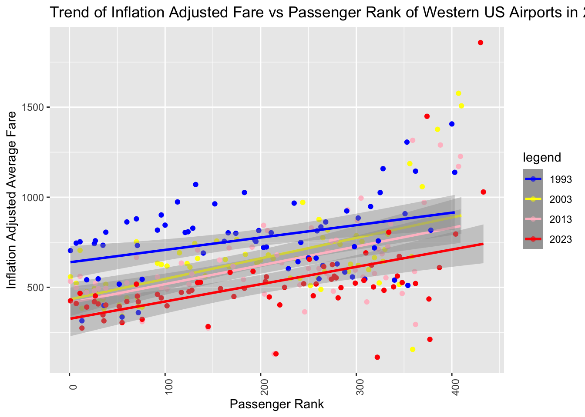
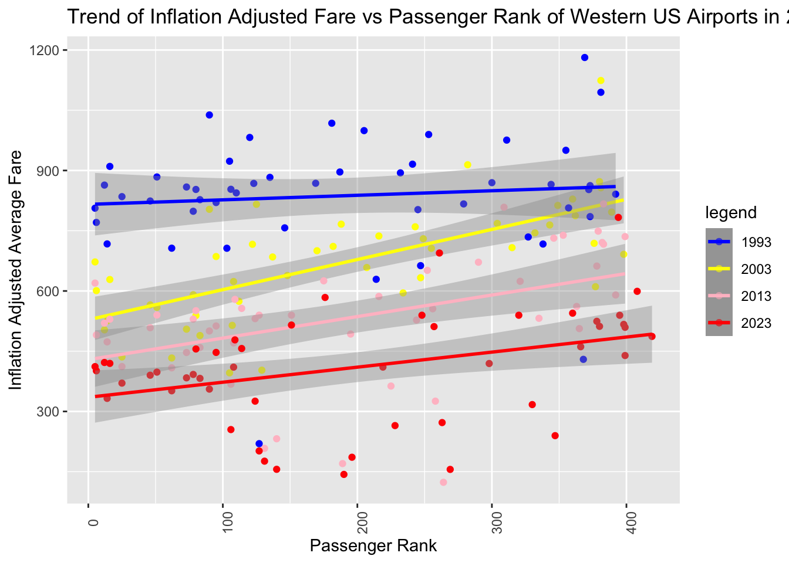
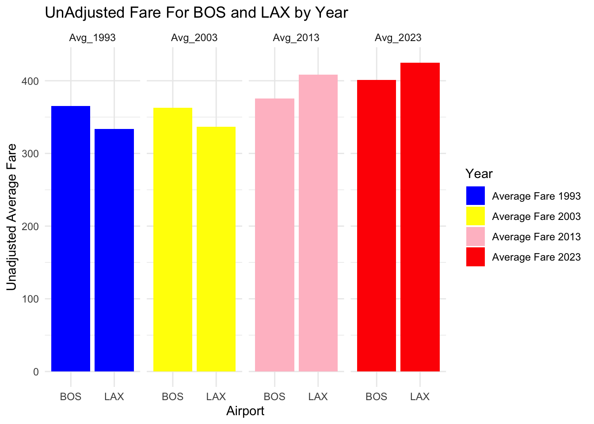
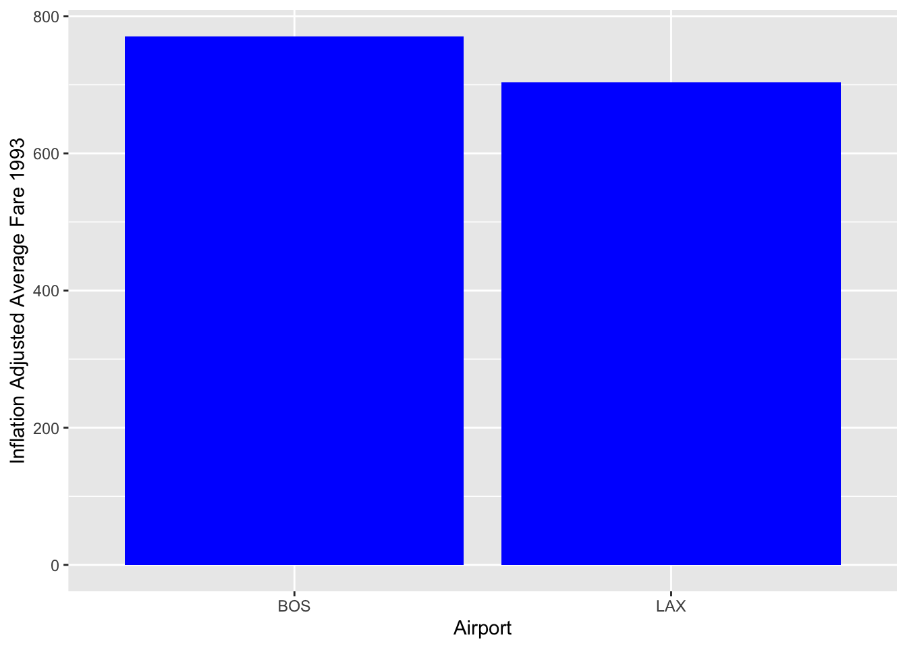
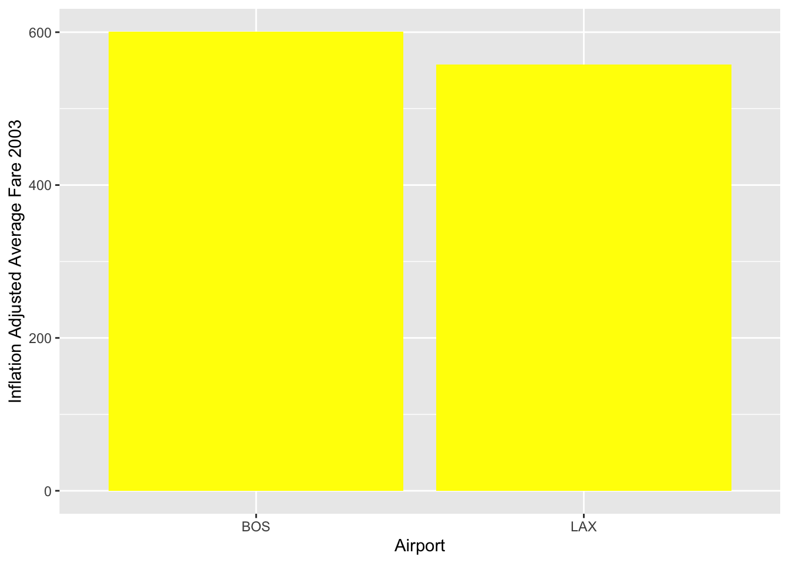
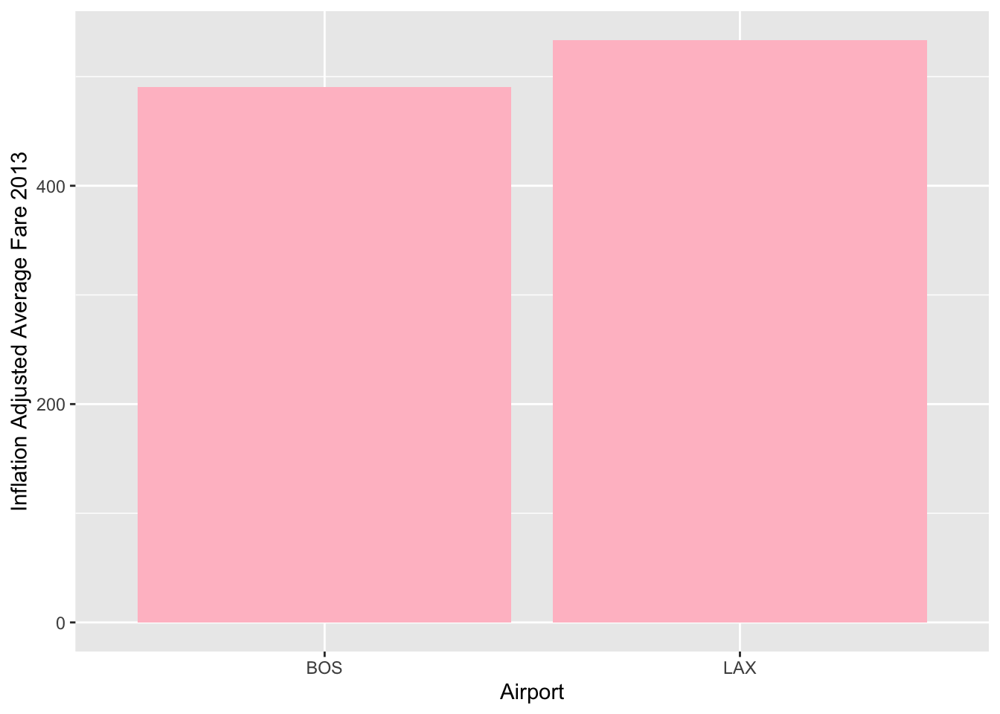
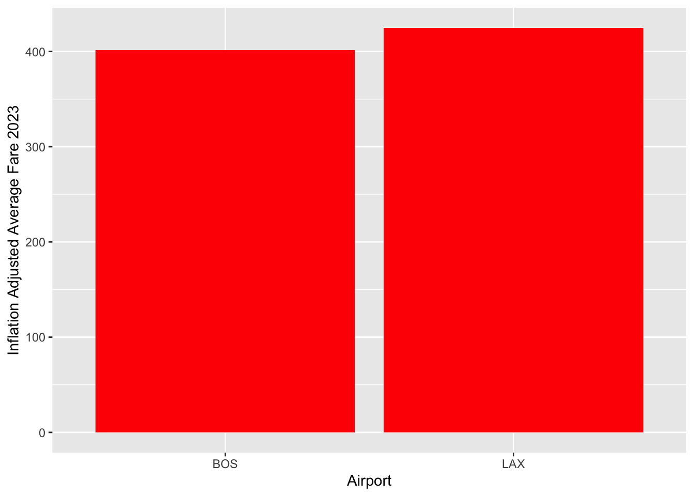

Research Question: Am I really paying more to fly home for thanksgiving than anyone ever has before?
Background: Every year it seems like buying my ticket home for the holidays hurts a little bit more than it did the year before. Am I being dramatic, or is the cost of airfare actually going up compared to years prior?
Precise research question:Is flying round trip from LAX to Logan Airport(BOS) more expensive on average than it has been in previous decades, when adjusting for 2023 inflation?
Step 1: Get my data, set up my library
Data Source:
I took data available from the second financial quarter of 4 years, 1993, 2003, 2013, and 2023; I felt that a ten year spread would be good enough to get a general sense of fare trends.
The names of some of the variables were overall very clunky, so I tried to fix that here.
Additionally had to change the coding to start after the first row, as below
library(dplyr)
Attaching package: 'dplyr'
The following objects are masked from 'package:stats':
filter, lag
The following objects are masked from 'package:base':
intersect, setdiff, setequal, union
library(data.table)
Attaching package: 'data.table'
The following objects are masked from 'package:dplyr':
between, first, last
names(set1)[names(set1) =="Average Fare ($)"] <-"Avg_1993"colnames(set1)[7]<-"Adjusted_Avg_Fare_Q2_1993"colnames(set1)[2]<-"Airport"colnames(set1)[1]<-"PassRank_1993"colnames(set1)[8]<-"_1993v2022_Passengers"names(set2)[names(set2) =="Average Fare ($)"] <-"Avg_2003"colnames(set2)[7]<-"Adjusted_Avg_Fare_Q2_2003"colnames(set2)[2]<-"Airport"colnames(set2)[1]<-"Pass_Rank_2003"colnames(set2)[8]<-"_2003v2022_Passengers"names(set3)[names(set3) =="Average Fare ($)"] <-"Avg_2013"colnames(set3)[7]<-"Adjusted_Avg_Fare_Q2_2013"colnames(set3)[2]<-"Airport"colnames(set3)[1]<-"Pass_Rank_2013"colnames(set3)[8]<-"_2013v2022_Passengers"names(set4)[names(set4) =="Average Fare ($)"] <-"Avg_2023"colnames(set4)[7]<-"Adjusted_Avg_Fare_Q2_2023"colnames(set4)[2]<-"Airport"colnames(set4)[1]<-"Pass_Rank_2023"colnames(set4)[8]<-"_2023v2022_Passengers"
Missing Values
Removing airports missing a value for ‘2022 Passengers’, a variable that compares the amount of domestic passengers each airport sees in 2022. A missing value or a value of 0 indicate these airports don’t provide commercial domestic flights, so I’m removing missing values and values of 0 because the corresponding airports wouldn’t be ones I would fly from.
# Filter out records with missing or 0 values in '_1993v2022_Passengers'set1 <- set1[complete.cases(set1$`_1993v2022_Passengers`) & set1$`_1993v2022_Passengers`!=0, ]# Filter out records with missing or 0 values in '_2003v2022_Passengers'set2 <- set2[complete.cases(set2$`_2003v2022_Passengers`) & set2$`_2003v2022_Passengers`!=0, ]# Filter out records with missing or 0 values in '_2013v2022_Passengers'set3 <- set3[complete.cases(set3$`_2013v2022_Passengers`) & set3$`_2013v2022_Passengers`!=0, ]# Filter out records with missing or 0 values in '_2023v2022_Passengers'set4 <- set4[complete.cases(set4$`_2023v2022_Passengers`) & set4$`_2023v2022_Passengers`!=0, ]
Combined my data into one dataset below. I realized the data was coded as character variables, so had to change my fare variables to dbl format as below.
The bottom of our dataset has statistics that I don’t need –> will take care of them below
Added coordinates just in case
I like having coordinate data just in case I’ll need it (maps are fun), so I found a data set with lat and longitude coordinates for US airports
pulled the info I needed from this dataset, then merged by airport abbreviation
airports <-read_csv('us-airports.csv')
Rows: 30598 Columns: 23
── Column specification ────────────────────────────────────────────────────────
Delimiter: ","
chr (23): id, ident, type, name, latitude_deg, longitude_deg, elevation_ft, ...
ℹ Use `spec()` to retrieve the full column specification for this data.
ℹ Specify the column types or set `show_col_types = FALSE` to quiet this message.
Dataset is smaller after dropping NA’s only bc the bottom of the dataset has BoTX statistics ( I dont need them).
Step 2: Check Data:
I felt like the best way to check my data would be to compare the inflation adjusted fare variable for each year (Adjusted_Avg_Fare_Q2) provided originally with my dataset with an actual dollar to dollar conversion between that year and 2023.
Conversions:
1993: 1->2.13
2003: 1->1.67
2013: 1->1.32
I coded a new variable “check.adj(xx)” for each year and compared the value
The value of my check variable and the actual inflation adjusted fare isn’t a perfect match, but its very close so I would consider my data valid.
Step 3: Bird’s eye view –> Comparing Airport Fare to Passenger Rank
library(openxlsx)# Assuming "trx" is your dataset# Replace "trx" with the actual name of your dataset# Creating a table of averages by stateaverages_by_state <- trx %>%group_by('State Name') %>%summarise(Avg_1993 =mean(Avg_1993, na.rm =TRUE),Avg_2003 =mean(Avg_2003, na.rm =TRUE),Avg_2013 =mean(Avg_2013, na.rm =TRUE),Avg_2023 =mean(Avg_2023, na.rm =TRUE) )# Print the resulting tableprint(averages_by_state)
# A tibble: 1 × 5
`"State Name"` Avg_1993 Avg_2003 Avg_2013 Avg_2023
<chr> <dbl> <dbl> <dbl> <dbl>
1 State Name 371. 393. 455. 489.
# Export the table to an Excel file in the working directorywrite.xlsx(averages_by_state, "averages_by_state.xlsx", rowNames =FALSE)
The dataset includes a variable Passenger Rank, that is compiled by comparing the overall passenger traffic at that airport for that year to the overall amount of total passengers at all airports in 2022. This variable allows us to rank the passenger load of that airport for that year to the rest in that year.
Are there any broad trends in the data provided? Logan and LAX are high traffic airports- can we predict any associations between their passenger rank and the average fare?
pass_rank_data <- trx %>%filter(Airport %in%c("LAX", "BOS")) %>%select(Airport, Pass_Rank_2023, Pass_Rank_2013, Pass_Rank_2003, PassRank_1993)# Specify the output Excel file pathoutput_file <-"pass_rank.xlsx"# Write the result to Excel in the working directorywrite.xlsx(pass_rank_data, output_file, rowNames =FALSE)
Both LAX and BOS consistently rank among the top 10 for passenger rank for all 4 years.
What can be said about passenger rank and average fare?
names(trx)[names(trx) =="State Name"] <-"State"west <- trx %>%filter(State=="CA"|State=="AK"|State=="WA"|State=="ID"|State=="OR"|State=="NV"|State=="UT")west %>%ggplot()+geom_point(mapping =aes(x = Pass_Rank_2003 , y = Adjusted_Avg_Fare_Q2_2003, color ="2003")) +geom_smooth(mapping =aes(x = Pass_Rank_2003 , y = Adjusted_Avg_Fare_Q2_2003, color ="2003"), method ="lm")+geom_point(mapping =aes(x = Pass_Rank_2013 , y = Adjusted_Avg_Fare_Q2_2013, color ="2013" )) +geom_smooth(mapping =aes(x = Pass_Rank_2013 , y = Adjusted_Avg_Fare_Q2_2013, color ="2013"), method ="lm")+theme(axis.text.x =element_text(angle =90)) +labs(title ="Trend of Inflation Adjusted Fare vs Passenger Rank of Western US Airports in 2003")+geom_point(mapping =aes(x = PassRank_1993 , y = Adjusted_Avg_Fare_Q2_1993, color ="1993")) +geom_smooth(mapping =aes(x = PassRank_1993 , y = Adjusted_Avg_Fare_Q2_1993, color ="1993"), method ="lm")+geom_point(mapping =aes(x = Pass_Rank_2023 , y = Adjusted_Avg_Fare_Q2_2023, color ="2023")) +geom_smooth(mapping =aes(x = Pass_Rank_2023 , y = Adjusted_Avg_Fare_Q2_2023, color ="2023"), method ="lm")+xlab(label ="Passenger Rank") +ylab(label ="Inflation Adjusted Average Fare")+scale_color_manual(name="legend",values =c("blue","yellow","pink","red"))
`geom_smooth()` using formula = 'y ~ x'
`geom_smooth()` using formula = 'y ~ x'
`geom_smooth()` using formula = 'y ~ x'
`geom_smooth()` using formula = 'y ~ x'

Looking at the trend for all years in my data set, it looks like as the Passenger Rank decreases, broadly speaking so does the cost of the average inflation adjusted flight there in the West.
It also looks like compared to previous years, 2023 fares range lower than the fares from the years prior, excluding a few outliers in the lower passenger rank region of the graph.
east <- trx %>%filter(State=="NY"|State=="PA"|State=="MD"|State=="DE"|State=="NJ"|State=="CT"|State=="RI"|State=="VT"|State=="MA"|State=="NH"|State=="ME")east %>%ggplot()+geom_point(mapping =aes(x = Pass_Rank_2003 , y = Adjusted_Avg_Fare_Q2_2003, color ="2003")) +geom_smooth(mapping =aes(x = Pass_Rank_2003 , y = Adjusted_Avg_Fare_Q2_2003, color ="2003"), method ="lm")+geom_point(mapping =aes(x = Pass_Rank_2013 , y = Adjusted_Avg_Fare_Q2_2013, color ="2013" )) +geom_smooth(mapping =aes(x = Pass_Rank_2013 , y = Adjusted_Avg_Fare_Q2_2013, color ="2013"), method ="lm")+theme(axis.text.x =element_text(angle =90)) +labs(title ="Trend of Inflation Adjusted Fare vs Passenger Rank of Western US Airports in 2003")+geom_point(mapping =aes(x = PassRank_1993 , y = Adjusted_Avg_Fare_Q2_1993, color ="1993")) +geom_smooth(mapping =aes(x = PassRank_1993 , y = Adjusted_Avg_Fare_Q2_1993, color ="1993"), method ="lm")+geom_point(mapping =aes(x = Pass_Rank_2023 , y = Adjusted_Avg_Fare_Q2_2023, color ="2023")) +geom_smooth(mapping =aes(x = Pass_Rank_2023 , y = Adjusted_Avg_Fare_Q2_2023, color ="2023"), method ="lm")+xlab(label ="Passenger Rank") +ylab(label ="Inflation Adjusted Average Fare")+scale_color_manual(name="legend",values =c("blue","yellow","pink","red"))
`geom_smooth()` using formula = 'y ~ x'
`geom_smooth()` using formula = 'y ~ x'
`geom_smooth()` using formula = 'y ~ x'
`geom_smooth()` using formula = 'y ~ x'

However, it does not look like this trend of is as strong in the east. Again, 2023 fares range lower than in previous decades when comparing inflation adjusted averages. From these figures, its starting to look like I might actually be paying less to fly out of LAX and BOS, two high traffic airports, than I would be in previous years.
How about if I compare Unadjusted average Fares across the four years of data?
LAX.BOS <- trx %>%filter(Airport %in%c("LAX", "BOS")) %>%select(Airport, Adjusted_Avg_Fare_Q2_1993, Adjusted_Avg_Fare_Q2_2003, Adjusted_Avg_Fare_Q2_2013, Adjusted_Avg_Fare_Q2_2023, Avg_1993, Avg_2003, Avg_2013, Avg_2023, Pass_Rank_2023, Pass_Rank_2013, Pass_Rank_2003, PassRank_1993)LAX.BOS %>%gather(key ="Year", value ="Unadjusted_Avg_Fare", Avg_1993, Avg_2003, Avg_2013, Avg_2023) %>%ggplot(aes(x = Airport, y = Unadjusted_Avg_Fare, fill = Year)) +geom_bar(stat ="identity", position ="dodge") +labs(title ="UnAdjusted Fare For BOS and LAX by Year")+xlab("Airport") +ylab("Unadjusted Average Fare") +facet_grid(. ~ Year, scales ="free_y", space ="free_y") +scale_fill_manual(values =c("Avg_1993"="blue", "Avg_2003"="yellow", "Avg_2013"="pink", "Avg_2023"="red"),labels =c("Avg_1993"="Average Fare 1993", "Avg_2003"="Average Fare 2003", "Avg_2013"="Average Fare 2013", "Avg_2023"="Average Fare 2023") ) +theme_minimal()

Looks as if the cost of the average ticket out of Logan has remained around the same across the 4 years of data that I collected, with a slight downtrend in 2013, which then up trended again into 2023. The average ticket out of LAX on the other-hand seems to have up trended steadily since 1993, starting at under $350 to a little over $400 by 2023.
Step 4: Answering My Question
How, lets look at adjusted fare across the 4 years of data, but just for LAX and BOS
LAX.BOS<-trx %>%filter(Airport=="LAX"|Airport=="BOS") %>%select(Airport, Adjusted_Avg_Fare_Q2_1993,Adjusted_Avg_Fare_Q2_2003,Adjusted_Avg_Fare_Q2_2013,Adjusted_Avg_Fare_Q2_2023, Avg_1993, Avg_2003, Avg_2013, Avg_2023,Pass_Rank_2023, Pass_Rank_2013, Pass_Rank_2003, PassRank_1993)LAX.BOS %>%ggplot()+geom_bar(aes(y=Adjusted_Avg_Fare_Q2_1993, x = Airport), stat="identity", fill ="blue")+xlab(label ="Airport") +ylab(label ="Inflation Adjusted Average Fare 1993")

LAX.BOS %>%ggplot()+geom_bar(aes(y=Adjusted_Avg_Fare_Q2_2003, x = Airport), stat="identity", fill ="yellow")+xlab(label ="Airport") +ylab(label ="Inflation Adjusted Average Fare 2003")

LAX.BOS %>%ggplot()+geom_bar(aes(y=Adjusted_Avg_Fare_Q2_2013, x = Airport), stat="identity", fill ="pink")+xlab(label ="Airport") +ylab(label ="Inflation Adjusted Average Fare 2013")

LAX.BOS %>%ggplot()+geom_bar(aes(y=Adjusted_Avg_Fare_Q2_2023, x = Airport), stat="identity", fill ="red")+xlab(label ="Airport") +ylab(label ="Inflation Adjusted Average Fare 2023")

Boston: Looks like I’ll actually be paying less than I would have in prior years, particularly in 1993. Almost $800 to fly in inflation adjusted rate, compared to $400 today.
LAX: Not as bad as Logan, which was about $700 to fly out of in 1993, compared to about $450 today.
It looks like on average, I would be paying $648 more for a round trip in 1993 when comparing inflation adjusted rates. So it looks like, at least comparing the years that I did, I actually have it better off with what I pay now compared to what I would be paying in 1993.
This is however limited scope–> I only looked at one quarter and across 4 interrupted time points.
Conclusion- Am I spending more money?
It looks like if we’re just looking at the dollar amount, yes I spend slightly more in 2023 than what people spent for the average round trip from BOS to LAX in previous years, primarily thanks to the rising cost of a ticket out of LAX. However, in inflation adjusted dollars (which is more relevant, even though it doesn’t feel any better) I am actually spending less. So in conclusion, I am not spending more in relative 2023 dollars than anyone else has every spent before for a round trip between LAX and Boston.
Extra; What’s the most expensive place to fly out of in 2023? What is the least expensive?
library(leaflet)library(devtools)
Loading required package: usethis
library(leaflet)library(magrittr)
Attaching package: 'magrittr'
The following object is masked from 'package:purrr':
set_names
The following object is masked from 'package:tidyr':
extract